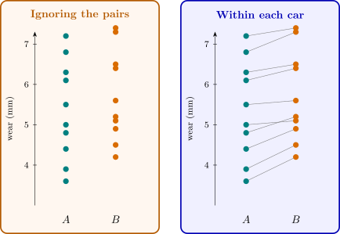

2.6 The paired comparison design
Section 1 showed that blocking can remove a large source of variation from a comparison. The simplest blocked design has blocks of two units.
Example 2.6.1. Ten cars are fitted with a tyre of brand \(A\) on one rear wheel and brand \(B\) on the other, the side being chosen at random for each car. The tread wear (mm) after \(20\,000\) km is
| car | brand \(A\) | brand \(B\) | \(d_j = y_{Bj} - y_{Aj}\) |
| \(1\) | \(4.8\) | \(5.2\) | \(0.4\) |
| \(2\) | \(6.1\) | \(6.4\) | \(0.3\) |
| \(3\) | \(3.9\) | \(4.5\) | \(0.6\) |
| \(4\) | \(7.2\) | \(7.4\) | \(0.2\) |
| \(5\) | \(5.5\) | \(5.6\) | \(0.1\) |
| \(6\) | \(4.4\) | \(4.9\) | \(0.5\) |
| \(7\) | \(6.8\) | \(7.3\) | \(0.5\) |
| \(8\) | \(5.0\) | \(5.1\) | \(0.1\) |
| \(9\) | \(3.6\) | \(4.2\) | \(0.6\) |
| \(10\) | \(6.3\) | \(6.5\) | \(0.2\) |
The model for a paired design is \[ y_{ij} = \mu _i + \beta _j + \varepsilon _{ij} , \qquad i = 1, 2 , \quad j = 1, \dots , n , \] where \(\beta _j\) is the effect of the \(j\)th pair (block) and the \(\varepsilon _{ij}\) are independent \(N(0, \sigma ^2)\). The within-pair differences \[ d_j = y_{1j} - y_{2j} = \mu _1 - \mu _2 + \varepsilon _{1j} - \varepsilon _{2j} \] do not contain \(\beta _j\) at all. They are independent \(N(\mu _d, \sigma _d^2)\) with \(\mu _d = \mu _1 - \mu _2\) and \(\sigma _d^2 = 2\sigma ^2\), so the comparison reduces to a one-sample problem. By Theorem 2.1.2, \[ T = \frac {\bar d - \mu _d}{s_d/\sqrt n} \sim t_{n-1} , \] and \(H_0 : \mu _1 = \mu _2\) is rejected if \(|\bar d|/(s_d/\sqrt n) > t_{\alpha /2,\,n-1}\). This is the paired \(t\) test.
Example 2.6.2. For the tyre data, \(\bar d = 0.35\) and \(s_d = 0.1958\), so \[ t_0 = \frac {0.35}{0.1958/\sqrt {10}} = 5.653 , \] against \(t_{0.025,9} = 2.262\); the \(p\)-value is \(0.0003\). Brand \(B\) wears more, and the \(95\%\) confidence interval for the difference is \(0.35 \pm 2.262(0.0619)\), that is \((0.210,\ 0.490)\) mm.
Suppose the pairing had been ignored and the data analysed as two independent samples. The means are \(5.36\) and \(5.71\), the sample variances \(1.500\) and \(1.281\), so \(s_p^2 = 1.391\), the standard error is \(\sqrt {1.391(2/10)} = 0.527\), and \(t_0 = 0.35/0.527 = 0.664\) with \(p = 0.52\). The same difference of \(0.35\) mm now looks like nothing at all.

The two analyses differ because the cars differ. The car-to-car variation is part of \(s_p^2\) but cancels from every \(d_j\), and the correlation between the two tyres on a car is \(0.989\). In general, if the two observations in a pair have common variance \(\sigma _y^2\) and correlation \(\rho \), then \[ \Var (\bar d) = \frac {\Var (y_1 - y_2)}{n} = \frac {2\sigma _y^2(1 - \rho )}{n} , \] against \(2\sigma _y^2/n\) for two independent samples of size \(n\). Pairing divides the variance by \(1/(1 - \rho )\), here by about \(90\).
Remark. Pairing is not free. The paired test has \(n - 1\) degrees of freedom for error, the unpaired test \(2n - 2\), so if the pairs are no more alike than units chosen at random (\(\rho \approx 0\)), pairing wastes \(n - 1\) degrees of freedom and gives a slightly less powerful test. The loss is small unless \(n\) is very small, and the potential gain is large, so when a natural pairing exists, it should be used. What is never acceptable is to choose between the paired and unpaired analyses after seeing which gives the smaller \(p\)-value: the analysis must follow the design that was actually used.
Questions on this section
Stuck on something here? Ask below and it stays attached to this topic.